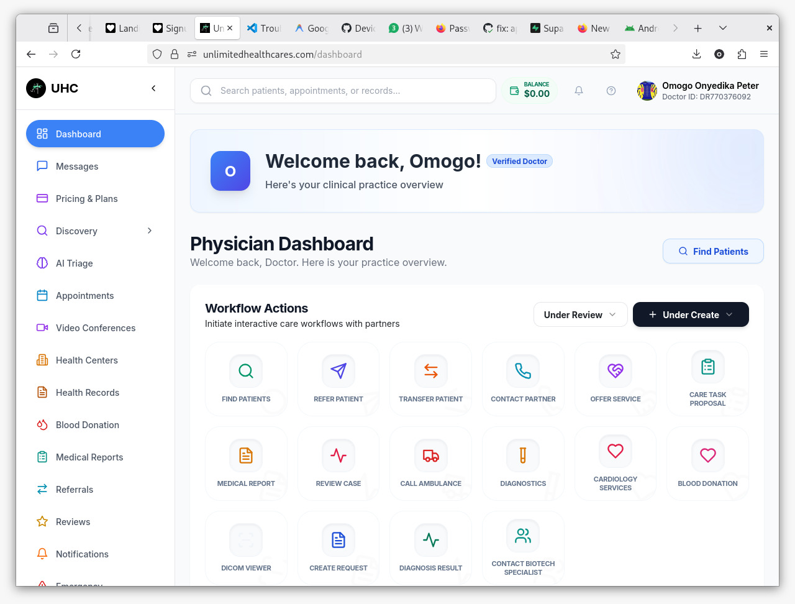

Featured Project & Recent Activity
Unlimited Healthcare (UHC)
A comprehensive healthcare ecosystem for patients and providers.

Project Overview
Unlimited Healthcare is a state-of-the-art digital health platform designed to bridge the gap between patients and healthcare providers. It provides a seamless experience for managing medical records, booking appointments, and engaging in real-time consultations.
Key highlights include an AI-driven health symptom checker, a real-time doctor-patient chat system powered by WebSockets, and a robust Blood Donation discovery system. My work on this project involved deep integration between the frontend and backend, ensuring high performance and security for sensitive medical data.
Key Features
- ▹AI Symptom Checker: Integrated AI chat to help users understand symptoms and find appropriate care.
- ▹Real-time Consultation: WebSocket communication for instant doctor-patient messaging.
- ▹Medical Record Management: Secure, digital repository for patient health history and lab reports.
- ▹Appointment Scheduling: Advanced booking system with automated availability checks.
- ▹Blood Donation Hub: Discovery system to connect donors with those in need.
Deployment & QA
Successfully led the closed testing phase for the Google Play Store deployment, managing a group of 20+ real testers and ensuring all platform requirements were met for production release.